建立标准与治理流程，判断数据能否进入后续分析链路。
任务概述
新一代电子信息装备差异化质量管控技术
本任务面向新型雷达整机、迭代增量式软件与基础元器件三类对象，研究贯穿论证、设计、研制、生产、试验、使用、维护等阶段的质量数据与知识处理问题。 任务涵盖「数据标准与治理」与「风险识别与响应」两大板块，并落实三项可验证核心工作。
研究对象与边界
- 整机（雷达）：信号与通道指标、环境一致性、任务剖面相关质量数据。
- 软件：版本变更、接口日志、缺陷与测试覆盖相关质量数据。
- 元器件：制造过程参数、批次一致性、退化与失效相关数据。
三层递进问题
- 数据层：来源分散，存在缺失、异常、冗余与标准不统一，难以判断数据是否可用于建模。
- 知识层：现象、原因、对象、环境与处置措施多为文本与表格碎片，缺少可推理关联。
- 决策层：三类对象风险机理不同，统一阈值与统一处置难以适配个体差异。
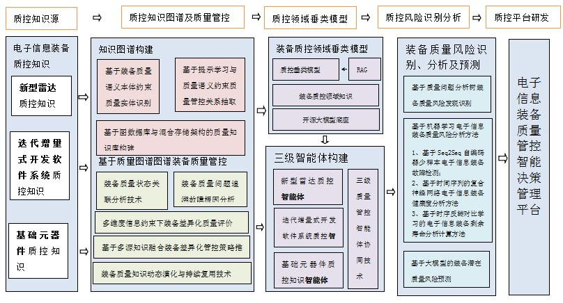
组织质量问题知识，支持状态关联、根因定位与策略推荐。
识别与预测质量风险，完成解释、协同处置与反馈优化。
技术方案架构
数据治理与风险识别两大方案
总体技术方案划分为数据标准与治理、风险识别与响应两个一级方案。 智能决策管理平台归属第二方案的落地集成环节，与风险识别、智能体协同一并推进。
数据标准与治理技术方案
- 标准体系：质量管理流程分析，术语、分类编码与格式交换规范
- 综合治理：异构数据表征、缺失补全、时空扩散补全与多模态增强
- 质量评价：灰色关联与证据融合指标体系，Lasso 特征提取与模糊综合评价
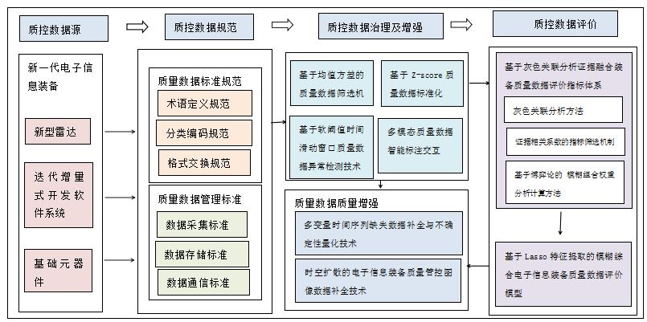
风险识别与响应技术方案
- 知识图谱：多源知识融合、实体关系抽取、差异化管控与根因追溯
- 风险分析：质量问题分析树、机器学习检测、检索增强潜在风险预测
- 智能体协同：整机、软件、元器件三类质量管控智能体及指标分解机制
- 评测与平台：反馈响应效果评测，六层智能决策管理平台
质量管控闭环流程
- 质量数据汇聚 汇集雷达整机、迭代软件与元器件在多阶段产生的多源异构质量数据，完成接入与上下文标注。
- 质控知识图谱构建 在治理数据基础上抽取实体关系，形成可查询、可推理、可增量更新的质控知识资产。
- 质量风险检测 对指标异常、性能退化与故障征兆开展识别与检测分析，输出风险等级与关键特征。
- 质量风险智能分析 结合知识图谱路径追溯、案例检索与大模型辅助，完成根因分析与潜在风险研判。
- 质量问题协同处置 由整机、软件、元器件三类质量管控智能体协同生成处置建议，并下发至对应质控应用。
- 装备质量持续优化 依据反馈响应效果评测结果，迭代数据治理策略、图谱知识与预测模型，形成持续改进机制。
上述流程在智能决策管理平台落地：感知层采集对象数据，治理层完成清洗补全与评价，垂类模型层注入领域知识，智能体层承担协同决策，风险分析层执行识别与预测，应用层面向三类对象开展任务下发、处置执行与反馈闭环。
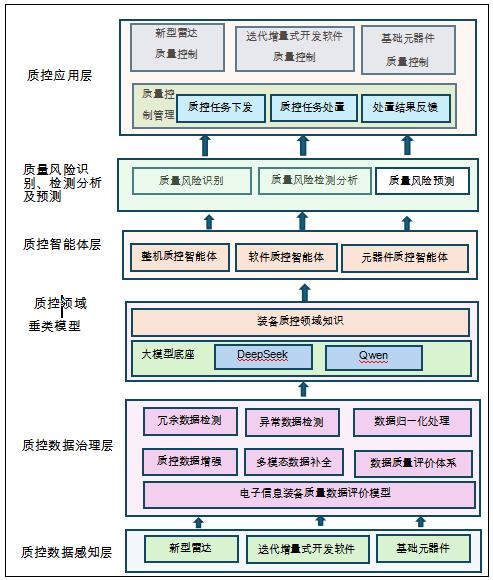
工作一
质量数据可信治理与评价
研究目标
面向新型雷达整机、迭代增量式软件与基础元器件三类质控对象，构建覆盖论证、设计、研制、生产、试验、使用与维护全阶段的多源异构质量数据治理体系。研究以质控数据规范为前提，经多模态数据清洗、缺失补全与异常识别完成数据增强，再建立多维度质量评价模型对治理结果进行量化评估，并将评价结论反馈至数据增强环节，形成「规范—治理—增强—评价」闭环。最终输出结构统一、质量可信、可用于建模与知识抽取的数据底座，为质控知识图谱构建与质量风险识别提供输入保障。
本板块技术路线按四段式主线展开：在明确质控数据源与对象边界的基础上，首先完成字段、单位与时间基准的统一；继而开展统计与智能相结合的清洗、补全与异常处置；对雷达运行、元器件退化等时序数据辅以滑动窗口动态监测；最后以多准则评价模型输出数据质量等级，并支撑多模态数据的关联绑定与标注。四类方法前后衔接、逐层递进，共同构成可信治理流水线。
方法 1：基于规则与统计的数据预处理
针对多系统接入初期数据格式杂乱、量纲不一的问题，以规则与统计方法建立治理基线。在统一字段命名、物理单位与时间戳对齐的基础上，完成缺失值填补、野值识别与特征归一化，为后续智能补全与模型训练提供口径一致的基础数据集。
- 数据格式统一：字段命名、单位统一、时间戳对齐。
- 缺失值处理：均值/中位数填充、KNN 补全、插值补全。
- 异常值识别：3σ、IQR、Isolation Forest、One-Class SVM。
- 归一化：Z-score、Min-Max；特征筛选：方差、相关性、Lasso。
方法 2：面向时序质量数据的滑动窗口异常检测
针对雷达整机运行监测、元器件性能退化与软件运行指标等连续时序数据波动大、固定阈值易误判的特点，采用局部滑动窗口刻画正常波动范围。在窗口内提取统计与频域特征，结合软阈值机制识别局部异常片段，为制造过程波动与在轨状态偏离提供时序侧异常线索。
- 将长时间序列切分为滑动窗口，计算均值、方差、趋势、峰度、偏度、频域能量等特征。
- 基于局部窗口构造动态阈值识别局部异常，可加入软阈值机制降低噪声影响。
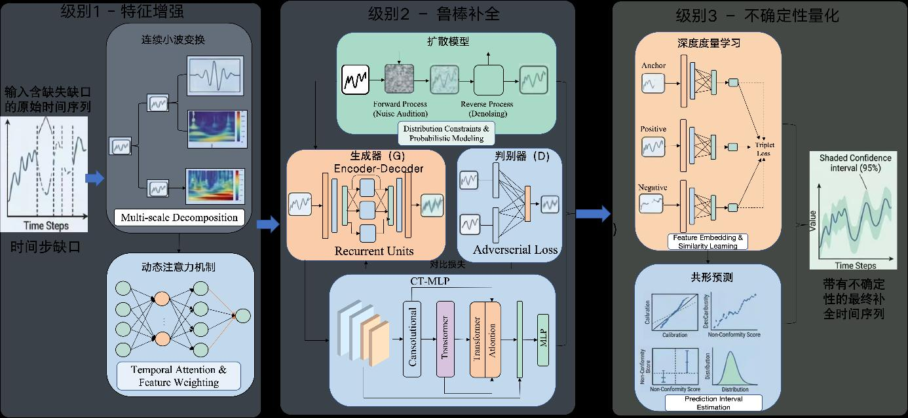
方法 3：质量数据综合评价模型
在清洗与增强完成后，需要回答治理结果是否达到可用于风险分析的质量门槛。本环节构建覆盖正确性、完整性、一致性、时效性与可解释性等维度的指标体系，综合确定权重并度量指标关联，最终输出等级及可解释的缺陷诊断结论，评价结果可反向指导数据增强策略调整。
- 使用 AHP 或 CRITIC 确定指标权重，灰色关联分析度量指标间关联。
- 模糊综合评价输出优、良、中、差等等级。
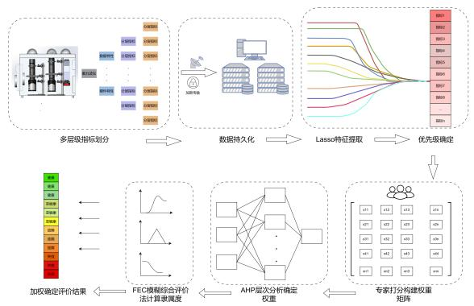
方法 4：多模态质量数据绑定与标注
面向同一装备、同一批次或同一试验任务下并存的表格记录、运行日志、检测图像与时序信号，建立跨模态关联与语义标注机制。通过装备编号、批次号与时间戳等规则完成数据绑定，并引入人机协同标注，使多模态质控数据在统一语义框架下可被检索、比对与联合分析。
- 建立表格、日志、图像、时序信号的跨模态关联规则。
- 大模型辅助生成初始标签，人工确认后入库。
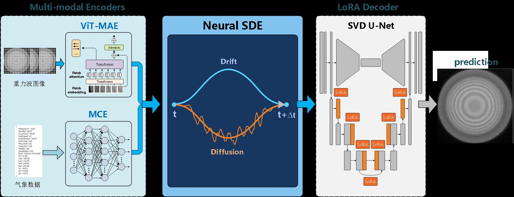
工作二
质控知识图谱与差异化根因追溯
研究目标
面向雷达整机、软件与元器件三类质控对象，构建覆盖质量问题、故障现象、检测指标、对象层级、环境工况与处置措施的质量管控知识图谱。研究首先建立质控领域本体，明确实体与关系类型；继而自测试报告、维修记录与标准规范等非结构化文本中抽取三元组，写入图数据库形成可查询、可推理的知识资产；在此基础上开展质量状态关联分析、沿因果链的根因追溯，并按对象类型推荐差异化管控策略，为风险识别与智能体协同提供知识支撑。
本板块按「本体定义—知识抽取—图谱构建—关联推理—策略输出」链条组织。先以领域本体约束图谱模式，再从文本中抽取实体与关系写入图数据库；当监测或检测环节出现异常现象时，沿图谱反向遍历定位可能根因，并依据整机、软件、元器件不同机理推荐差异化处置措施。四类方法相互衔接，体现知识驱动差异化管控的技术逻辑。
方法 1：构建质量管控本体
质控知识图谱构建的首要任务是明确领域概念体系与关系模式。本体需覆盖装备对象层级、软件版本与接口、质量现象与指标、环境工况及处置措施等核心实体，并定义属于、导致、关联、发生于、处置为、影响等关系类型，为后续抽取、融合与推理提供统一语义约束。
- 实体：装备对象、软件对象、质量现象、质量指标、环境工况、处置措施。
- 关系：属于、导致、关联、发生于、处置为、影响。
方法 2：从文本中抽取实体与关系
在本体约束下，将分散于质控文档中的知识转化为结构化三元组。基础阶段可采用规则词典与模板匹配快速积累种子知识；进阶阶段引入命名实体识别与关系抽取模型，对专业术语、故障描述与处置记录进行自动标注，经人工校验后增量写入图数据库，支撑图谱持续更新。
- 基础：规则词典、正则与关键词模板抽取「现象—原因—措施」。
- 进阶：BERT-BiLSTM-CRF 命名实体识别，提示学习或大模型关系抽取，写入 Neo4j。
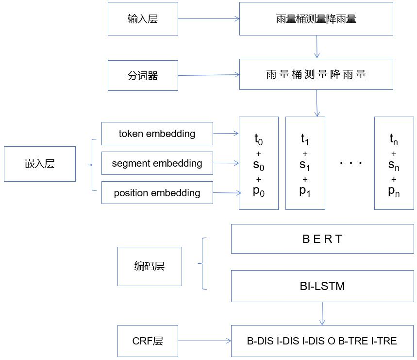
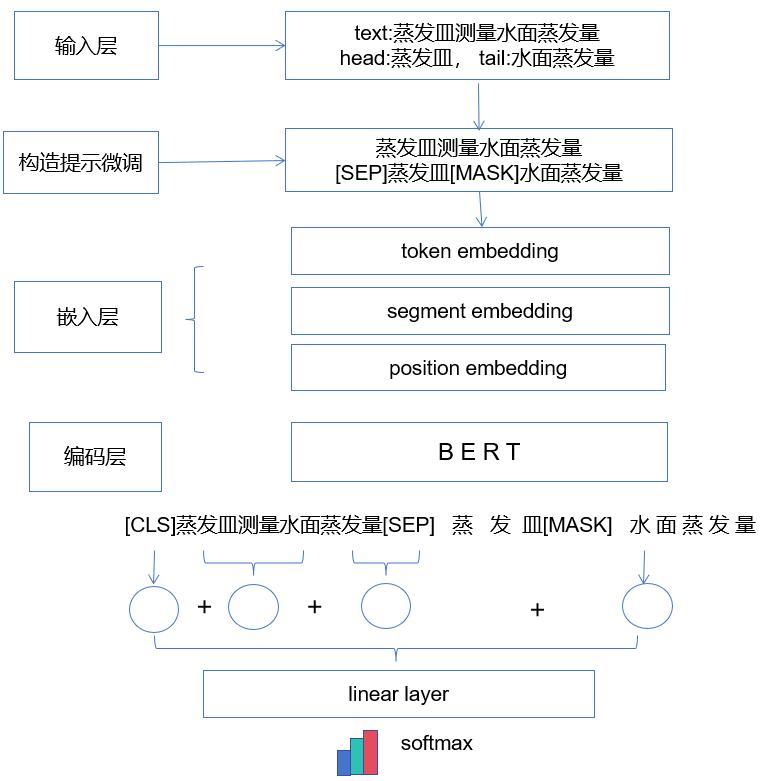
方法 3：基于图谱的根因追溯
当风险识别或监测环节给出异常现象后，在已构建的质控知识图谱中检索与之相连的指标、部件、环境与历史案例，沿导致、影响、发生于等关系反向遍历，对候选根因进行排序与解释，将反向图遍历根因追溯落到可执行的图查询与路径推理流程上。
- 输入异常现象，检索相连指标、部件、环境与历史案例。
- 沿因果关系反向遍历，输出根因排序与可交互排查路径。
方法 4：差异化管控策略推荐
根因定位完成后，需结合对象类型与风险等级生成可执行的管控建议。整机侧重复测校准与任务剖面限制，软件侧重版本回退与回归验证，元器件侧重批次筛查与降额使用，策略推荐结果与图谱中的处置实体及历史案例保持一致。
- 整机：复测、校准、整机环境试验、任务限制。
- 软件：版本回退、补丁测试、接口联调、回归测试。
- 元器件：批次筛查、老化试验、更换、降额使用。
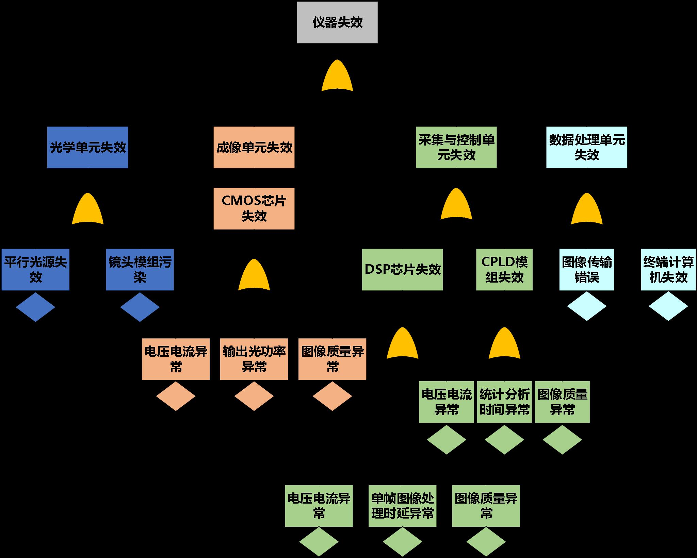
工作三
质量风险预测与三类智能体协同管控
研究目标
在质量数据可信治理与质控知识图谱基础上，构建面向雷达整机、软件与元器件的质量风险识别、检测分析与潜在风险预测方法，并建立整机、软件、元器件三类质量管控智能体协同机制。研究形成从异常发现、风险研判、知识增强解释到协同处置建议生成的完整链路，结合反馈响应效果评测，支撑装备质量持续优化。
本板块按风险识别与响应主线串联四项能力：先以机器学习与深度学习模型完成质量风险检测与异常识别；对少样本场景辅以自编码器重构误差判异；再将检测结果与质控知识图谱、案例库结合，经检索增强生成完成风险解释与潜在风险预测；最后由三类智能体在指标分解与风险汇总机制下输出协同处置建议，并经反馈评测闭环迭代。
方法 1：基于机器学习的风险检测
面向表格型制造质量数据与运行监测时序数据，采用监督与无监督相结合的检测分析手段，输出异常概率、风险等级与关键特征，为后续图谱追溯与智能体决策提供量化输入，是风险识别链路的入口环节。
- 表格数据：随机森林、XGBoost、逻辑回归、SVM。
- 时序数据：滑动窗口特征 + 分类器；少样本：Isolation Forest、自编码器。
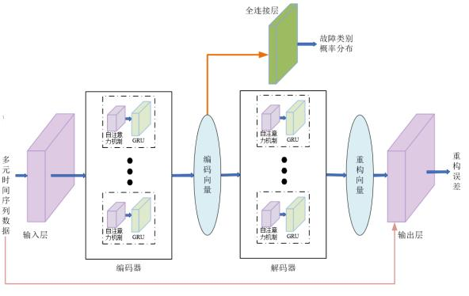
方法 2：基于自编码器的少样本故障检测
针对装备现场故障样本稀缺、正常工况数据相对充足的特点，以正常样本训练自编码器学习重构模式，将重构误差作为异常度量，并可扩展为序列到序列结构以适配多元时序。检测出的异常片段进一步映射至知识图谱中的质量现象节点，衔接根因追溯与解释环节。
- 只使用正常样本训练自编码器，学习正常数据重构模式。
- 计算新样本重构误差，超过阈值则判定为异常。
- 将异常片段映射到知识图谱，辅助解释原因。
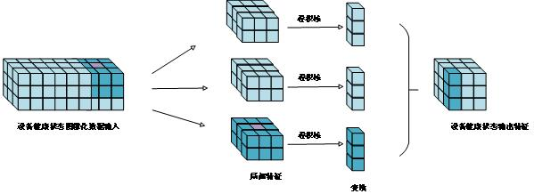
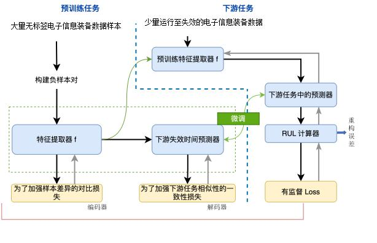
方法 3：基于知识增强 RAG 的风险解释
在模型给出风险判定后，提取异常指标、对象、时间与工况等上下文，检索质控知识图谱与历史案例，将结构化证据组织为提示上下文，由垂类大模型生成风险解释与处置建议。判断依据主要来自检测模型与图谱推理，生成层侧重证据整合与表述，以降低幻觉并支撑可溯源决策。
- 异常检测 → 提取上下文 → 检索图谱与案例库 → 拼接提示 → 生成解释与建议。
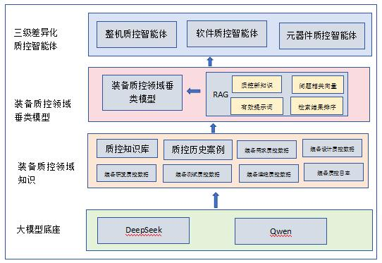
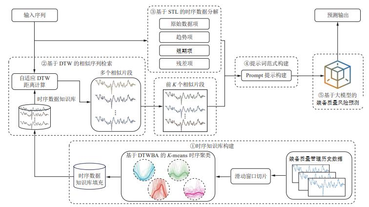
方法 4：三类智能体协同机制
在风险分析结果基础上，构建整机、软件、元器件三类质量管控智能体。整机智能体负责质量指标分解与全局决策共享，软件智能体关注耦合稳定与风险可溯，元器件智能体关注参数可控与失效机理可释；通过自上而下分解、自下而上汇总与冲突协调机制，形成群智协同的质量处置方案，并由反馈评测检验及时性、有效性与完备性。
- Top-Down：整机质量目标分解到软件和元器件。
- Bottom-Up：软件/元器件异常向整机反馈风险。
- 冲突处理：依据风险等级与任务约束协调处置优先级。
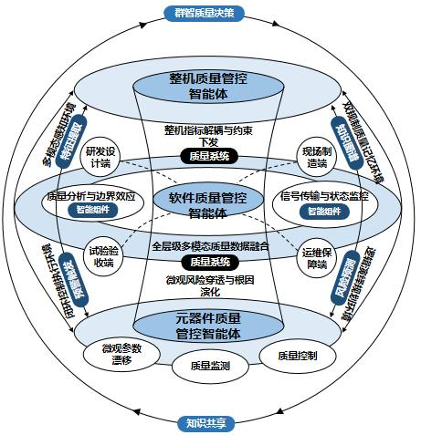
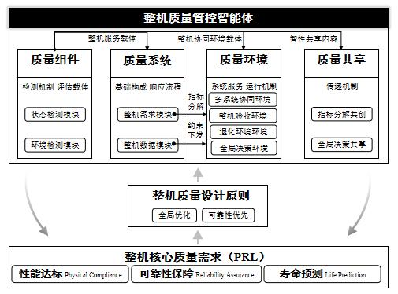
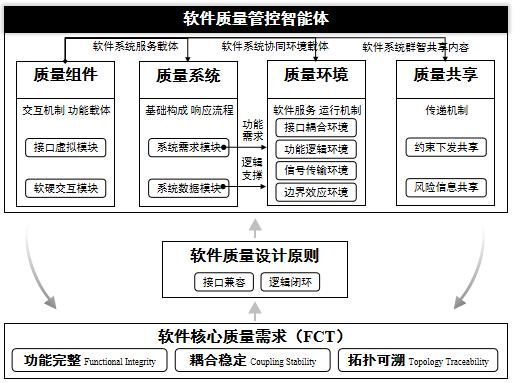
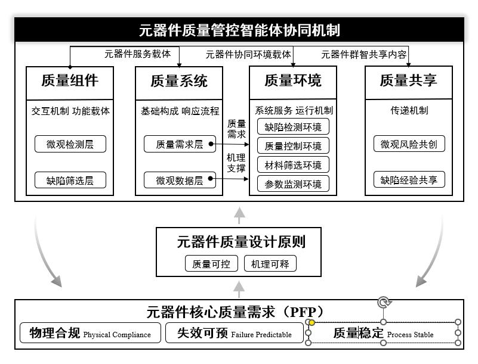
创新点与尝试方向
申报书创新点及可延伸研究方向
下列创新点来源于任务书技术方案，是工作二、工作三的核心突破方向。 文末补充两项可在工作一与工作三之间衔接的尝试性研究，以段落方式陈述，供论文进一步凝练。
创新点 1：基于质控知识图谱的电子信息装备差异化质量管控技术
对应工作二。依托质控知识图谱关联推理，解决电子信息装备层级质量管控难题，形成从元器件到整机的质量状态关联、根因追溯与个性化策略推荐能力。
- 层级影响传播分析：打通从元器件到整机的质量状态关联，量化层级间质量影响。
- 反向图遍历根因追溯：从故障现象沿图谱路径定位根因，替代纯人工经验排查。
- 动态权重差异化评价：引入多维度约束，为每台装备计算差异化质量评分，推荐个性化管控策略。
- 增量式图谱更新：支持新知识注入与旧知识版本管理，实现知识动态演化。
创新点 2：基于大模型及知识驱动的电子信息装备潜在质量风险预测技术
对应工作三。面向潜在质量风险隐蔽、难以提前识别的问题，将时序特征提取、领域先验注入与多模态融合相结合，实现从隐式征兆到显式预测输出的转化。
- DTWBA-K-means 时序聚类：将动态时间规整与中心化思想融入 K-means，缓解时序偏移与异常对距离度量的影响。
- 先验知识注入 Prompt：将质量管理知识库、STL 分解等专业先验注入提示词，增强大模型对质控场景的适配。
- 补丁重编程多模态对齐：通过多头交叉自注意力实现时序数据与文本知识的模态对齐。
- 隐式到显式预测流程：经知识库特征提取、先验引导与多模态融合编码，将潜在风险转化为可提前处置的显式输出。
可延伸的尝试方向
细粒度可信数据治理
传统工业数据治理多为一次性清洗，仅粗粒度判断数据是否可用，异常检测、缺失补全与一致性修复往往相互割裂，治理过程产生的二阶误差也难以传递到下游风险模型。 可尝试将数据质量从单一维度扩展为完整性、一致性、时序性、规范性、可追溯性等细粒度子指标，输出可解释的结构化诊断报告； 并将异常检测、时序补全与一致性修复整合为连续治理流程，使治理后的时序数据除数值外还附带量化置信度，为后续模型提供带权输入。
数据与模型不确定性统一表达
现有质量预测模型多输出单点绝对评分，未能将原始数据的噪声水平、不完整性与模型自身推理波动统一表征，复杂工况下易出现误报或漏报。 可在获取前端治理置信度的基础上，探索不确定性在「治理—检测—预测—决策」链路上的传递：将数据置信度转化为模型训练或推断的先验约束， 结合蒙特卡洛 Dropout 或贝叶斯思路表征模型波动，并尝试以区间化输出替代单点判定，形成更符合工业现场的风险感知型决策表达。